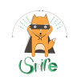

Informations générales
- Cadre : Engagement bénévole
- Structure : Club SMIL'E de l'ESAIP
- Date : 2019 à aujourd'hui
Présentation du club
Le club SMIL'E a pour but de divertir les enfants en organisant des activités ludiques qui leur permet d'apprendre de nouvelles choses tout en s'amusant. Nous sommes déjà intervenu plusieurs fois dans une école pour réaliser des expériences, de la sensibilisation ou des mini-projets. Personnellement je suis trésorier et intervenant dans le club.
Notre club a de plus fait un don à l'association "Marie" rêves et espoirs afin de réaliser le rêve d'un enfant malade.
Mes missions
Interventions dans une école primaire
L’activité principale de notre club est l’intervention dans l’école primaire Jules Verne à Angers une fois par mois. Il s’agit de la troisième année où nous travaillons avec des enseignants de l’école pour proposer des activités ludiques aux élèves.
Avant d’intervenir dans l’école, il y a toute une phase de recherche et de préparation à laquelle je participe. Durant celle-ci nous devons chercher ou inventer des idées d’activités ludiques en lien avec le programme scolaire des niveaux visés (CE1, CE2, CM1 et CM2). Les activités que nous avons proposées jusqu’à aujourd’hui sont des expériences scientifiques, des sensibilisations ou des découvertes de notions comme la programmation informatique. Vous pouvez retrouver quelques exemples d’activités dans la partie « Contenu supplémentaire ».
Afin de standardiser les activités, nous avons créé un modèle de fiche, appelée « Fiche technique », qui présente l’activité avec différentes catégories : présentation, objectif, matériel, explication et annexe. Une fois les idées d’activités validées par les membres du club, nous créons une fiche pour chacune d’elles.
Pour prévoir nos interventions, nous nous réunissons en début d’année scolaire avec les professeurs. Durant cette réunion nous échangeons sur les activités que nous proposons afin de les adapter aux élèves.
Ensuite nous préparons les activités sélectionnées avec les professeurs. Pour les expériences scientifiques, nous devons acheter le matériel nécessaire et tester une dernière fois l’expérience pour ne pas avoir de problème le jour de l’intervention. Pour une activité de découverte de la programmation informatique nous avons nous-mêmes créé un jeu de cartes pour les élèves.
Ce processus de préparation fini, nous pouvons intervenir dans les classes. Nos interventions ont toujours été un moment de partage avec les élèves. D’un côté nous leur faisons découvrir des notions et concepts et de l’autre ils nous apprennent à être pédagogue et adapter nos explications. Chaque intervention se termine par des sourires sur le visage des élèves et des intervenants.
Trésorier du club
Mon autre fonction dans le club est celle de trésorier. C’est une mission que je prends très à cœur et qui constitue une part importante de la vie du club. En effet, nos interventions nécessitent du matériel qui doit être acheté. Cela me demande donc de prévoir un budget.
Une autre de mes tâches est de gérer les comptes du club. Pour cela j’utilise un tableau qui contient les dépenses et revenus accompagnés d’informations complémentaires comme la date, une description, un état de remboursement et une référence.
Fabrication de cookies
La vente de cookies est notre source de revenus. À la création de notre club, nous devions trouver un moyen d’avoir de l’argent afin d’acheter le matériel nécessaire à nos interventions. Nous avons choisi de fabriquer des cookies et de les vendre aux étudiants et professeurs de notre école. Je participe à l’achat des ingrédients, à la fabrication des cookies et à la vente.
Création de vidéo éducatives
Durant la période de confinement nous avons eu l’idée de proposer aux professeurs de réaliser des vidéos pour remplacer nos interventions mensuelles. Nous avons donc réalisé quelques vidéos sur différents sujets scientifiques ou non. Vous pouvez trouver un lien vers notre chaîne YouTube dans la partie « Contenu supplémentaire ».
J’ai eu l’occasion de travailler sur certaines de ces vidéos à tous les postes. J’ai donc participé à la recherche de sujets, à l’écriture des scripts, au montage des vidéos et j’ai même joué le rôle d’acteur pour deux vidéos.
Création d'un livre
En 2021 nous avons lancé un projet de création de livre à destination des enfants. Celui-ci sera séparé en deux parties : « Expériences scientifiques » et « Découvertes ». La première partie reprendra nos fiches techniques de manière plus adapté aux enfants et la deuxième présentera un sujet de culture générale.
Dans ce projet, ma mission est d’écrire des articles pour la partie « Découvertes ». J’ai d’ailleurs pu en écrire quelques-uns sur les sujets suivants : « Comment se forment les aurores boréales ? », « Comment se forment les arcs-en-ciel ? », « Comment se forme le charbon ? » et « Qu’est-ce que le code Morse ? ».
Apports de l'engagement
Compétences
- Choisir des activités adaptées aux niveaux des élèves
- Préparer des activités (achat/création matériel)
- Défendre un projet
- Travailler en équipe
- Rédiger un article vulgarisé sur un sujet
- Ecrire un script de vidéo
- Cuisiner des cookies
- Gérer un budget
Connaissances
- Programme scolaire niveaux élémentaires
- Montage vidéo
- Psychologie de l’enfant
- Méthodes de gestion d’un budget
- Savoir vulgariser
Savoirs-être
- Patience
- Pédagogie
- Être attentif
- Écoute
- Rigeur
- Être créatif
- Être entreprenant